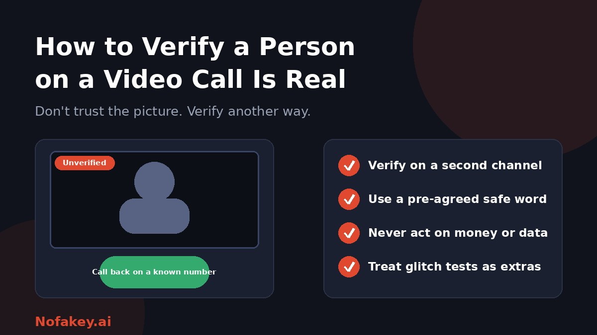

For years, seeing someone on a live video call was good enough proof they were who they said. That assumption no longer holds. Real-time face and voice tools can make a stranger look and sound like a relative, a manager or a job candidate. The honest answer to "how do I know this person is real?" is that you often cannot tell from the picture alone. This guide shows what to do instead.
Why seeing is no longer believing
Live deepfakes can swap a face or clone a voice as the call is happening. Attackers can also play a pre-recorded or generated clip into a call, or feed a manipulated video stream into a meeting app in place of a real camera. They often combine this with a convincing story: an urgent request, a new number, a secret. The goal is to get you to act before you check.
If you want the basics first, read what a deepfake is and how to protect yourself.
Glitch tests: useful extras, not proof
You may have seen tips like asking someone to turn their head to the side, pass a hand across their face, or hold up a phone beside their face. Some fakes struggle with these movements. Others do not, and tools keep improving. Treat any result as one signal.
| Check | What it may show | How far to trust it |
|---|---|---|
| Turn head to the side | Face edges or features may warp on weaker fakes | Low. Good fakes can handle it |
| Hand across the face | Overlay glitches when something blocks the face | Low |
| Lighting and reflections | Mismatched shadows, glasses reflections or skin tone | Low to moderate |
| Lip sync and voice | Delay, flat emotion, odd pacing | Low. Poor connections cause the same |
| Camera and device oddities | Frozen background, unnatural stillness, virtual camera names | Moderate if you can see the device details |
A natural-looking call that passes every glitch test can still be fake. A badly lit call with a poor connection can be real. That is why behavioural and out-of-band checks matter more.
Verification that actually works
- Use a second channel. End the call and contact the person on a number or account you already had, not one given during the call. This is the strongest single check.
- Agree a safe word in advance. Families, executives and finance teams can agree on a word or phrase that is never shared online. Ask for it when something unusual is requested.
- Ask a question only the real person could answer. Choose something that is not on social media, in public profiles or in shared emails. Avoid questions with guessable answers, such as a pet's name that appears in photos.
- Use a made-up detail. Mention a fake event or a name that does not exist and see whether they play along. A real person will correct you.
- Check the context. Is this the usual way this person contacts you? Is the timing, request or tone out of character?
- Check how you got into the call. Where did the meeting link come from? Does the invite match the usual organiser, platform and calendar entry?
- Slow it down. Urgency and secrecy are the biggest red flags. A real person will accept a short delay for verification.
- Move sensitive actions off the call. Confirm payments, access and data changes through a separate, documented process.
How to set up a safe word that works
- Agree it in person or on a trusted channel, not in a group chat that others can read.
- Make it unguessable and unrelated to public information. Do not use a name, date or word that appears online.
- Keep it offline. Do not store it in shared documents or social posts.
- Use it only for real emergencies and high-risk requests, and change it if you think it has been exposed.
- Teach it to older relatives and teenagers. They are common targets of urgent-request scams.
For workplaces and teams
Video-call impersonation is a payment, access and data risk. Put controls around the decision, not the face.
- Never approve payments, new payees, bank-detail changes or access on a video call alone. Require a call-back to a known number and a second approver.
- Secure meetings. Use waiting rooms, authenticated participants, and invitations from known organisers.
- Verify new contacts independently. For suppliers, advisers and executives joining for the first time, confirm through a trusted source.
- Train staff, and make it safe to question a "boss." Run realistic practice scenarios.
- Use identity tools as one layer. Some platforms offer real-time identity checks and deepfake risk signals. Treat their output as a risk signal, not a guarantee, and test any tool before relying on it. See are AI detectors accurate? for why.
- Write a response plan. The steps in brand protection against deepfake impersonation apply to internal fraud, too.
If the call is a job interview
Remote interviews are a growing target for impersonation, including candidates using altered faces or voices, or someone else answering on their behalf. Verify identity through proper channels, confirm references independently, use unscripted follow-up questions and live work samples, and compare the person you met with the person who turns up on day one. See AI detection tools for HR teams for a fair hiring workflow.
For personal calls: friends, family and new contacts
- Be careful with new online relationships. A person who is always "unable" to meet in person, or who avoids certain camera requests, may not be who they appear to be.
- Never send money, gift cards, crypto or personal documents to someone you have only met online, however convincing the call.
- Be careful about images. Do not share intimate images with someone you cannot verify. If someone threatens you with fake or real images, do not pay, keep the evidence, and tell a trusted adult or support service and report it.
- Teenagers and children should know they can tell a trusted adult about any video contact that feels wrong, without getting in trouble.
- Verify "family emergencies" by calling the person's saved number or another relative.
Realistic example
Made-up scenario: the urgent "manager"
A finance assistant gets a video call from someone who looks and sounds like the finance director. They ask for an urgent transfer to a new supplier and say there is no time for the usual approval.
What works: the assistant says they will confirm through the normal process, ends the call, phones the director on their saved number, and follows the dual-approval policy. If the call was fake, nothing is lost. If it was real, the director understands.
What to do if you suspect a fake
- Do not send money, codes, documents or access.
- End the call politely, with a reason such as "I'll call you back."
- Contact the real person on a separate, trusted channel.
- Save evidence: screenshots, meeting details, usernames and times.
- Tell people who may be targeted: your team, your family, or your security or fraud team.
- If you already shared something, contact your bank, change passwords, and report quickly.
- Report it to the platform and to your local police or cybercrime service.
Conclusion
You cannot reliably verify someone on a video call by looking harder. Rely on checks that do not depend on the picture: a second channel, a safe word, questions that cannot be researched, secure meeting habits, and rules that stop money and access moving on a call alone. If you receive a suspicious message, offer or link, paste it into our free checker for a quick first read, and find more guides on the Nofakey.ai blog.
Frequently asked questions
How can I tell if someone on a video call is a deepfake?
You cannot rely on spotting glitches. Verify the person through a second channel you already trust, such as calling back on a saved number, and use a pre-agreed safe word or a question only the real person could answer.
Do tests like turning your head or waving a hand over your face work?
They may expose weaker fakes, but they are not reliable and tools keep improving. Use them as extra signals, never as proof that someone is real.
What question should I ask to verify someone?
Ask something only the real person would know that cannot be found online, or agree a safe word beforehand. Avoid questions whose answers appear on social media or in public profiles.
What should I do if I think a video call is a deepfake?
End the call without sharing money, codes or personal data, contact the real person on a separate trusted channel, tell your team or family, and report it to the platform and relevant authorities.
How can organizations protect against deepfake video call fraud?
Never approve payments, access or data changes on a video call alone. Use call-back and dual-approval rules, verify identity through trusted checks, secure meeting invitations, train staff, and consider identity verification tools as one layer.
Got a suspicious message, link or offer to check?
Run it through the checker